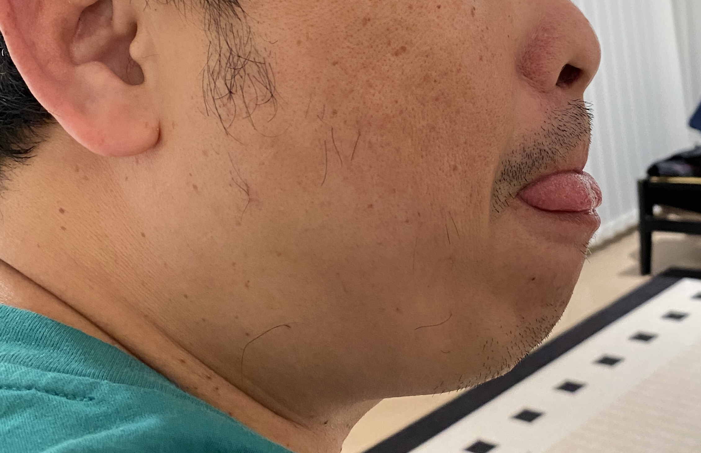
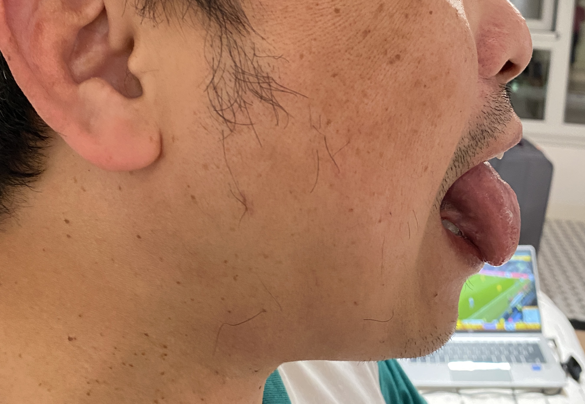

Appointment & Consulting
预约您的专属疗程
欢迎通过 LINE 官方账号进行免费的初步疼痛问题咨询与神经系统评估。
您好，我是 Jack 医生，一名专注于本功能性深层腱反射疗法（Proprioceptive Deep Tendon Reflex, 简称 P-DTR）的神经疗法专家。我致力于检测并重置大脑接收到的错误感官信号（Faulty Sensory Inputs），这正是导致身体长期酸痛、骨骼结构失衡以及运动损伤的真正核心根源。
传统疗法通常只针对骨骼和肌肉（硬件）进行调理，而 P-DTR 则深入到感觉受器与大脑思维系统（软件）进行根本性修复。
我们体内拥有数以百万计的感受器，随时向大脑传递压力、疼痛和拉伸等信息。当经历创伤或外伤后，这些感受器可能会变得过度敏感，持续向大脑发送错误的“警报信号”。
当大脑接收到这些扭曲的警报信号时，为了保护身体，它会选择“关闭开关”或使某些肌肉群变弱。这会导致其他部位的肌肉不得不超负荷工作，从而引发长期紧绷、疼痛或慢性炎症。
我们通过徒手肌肉测试（Manual Muscle Testing）结合对特定感受器的精准刺激来进行诊断。随后利用深层腱反射（Deep Tendon Reflex）敲击来清理系统干扰，将正确的信号即时输送回大脑。
展示患者在接受神经感官系统调理后，身体活动度和结构发生的即时改善与变化。
疗效：通过清理颈椎部位的神经干扰信号，成功阻断并平息了面部肌肉的异常抽搐现象。


疗效：成功清理了第12对脑神经（舌下神经）与舌根肌肉的系统性神经干扰信号。
欢迎通过 LINE 官方账号进行免费的初步疼痛问题咨询与神经系统评估。